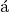

Bayesian short course¶
Welcome to a short course in Bayesian statistics. This course is being taught in March 2014 at Station d’Ecologie Exprimentale du CNRS  Moulis. The goal of the course is to use a literate programming style of analysis to carry out statistical tests commonly encountered in the biological sciences. A major reason for using this style is that if you do it well once then you do not have to re-learn it again.
All examples from this course can be reproduced easily. Of course this course is also about Bayesian statistics and the scope is fairly limited, but focused on doing a few things well. Interested participants will be pointed to resouces along the way to further their understanding of the different subjects.